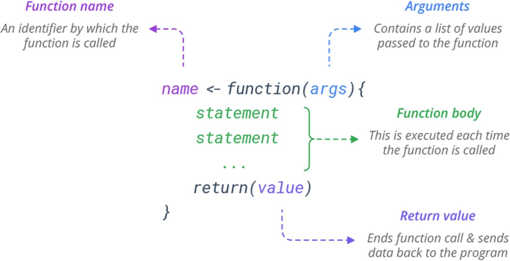
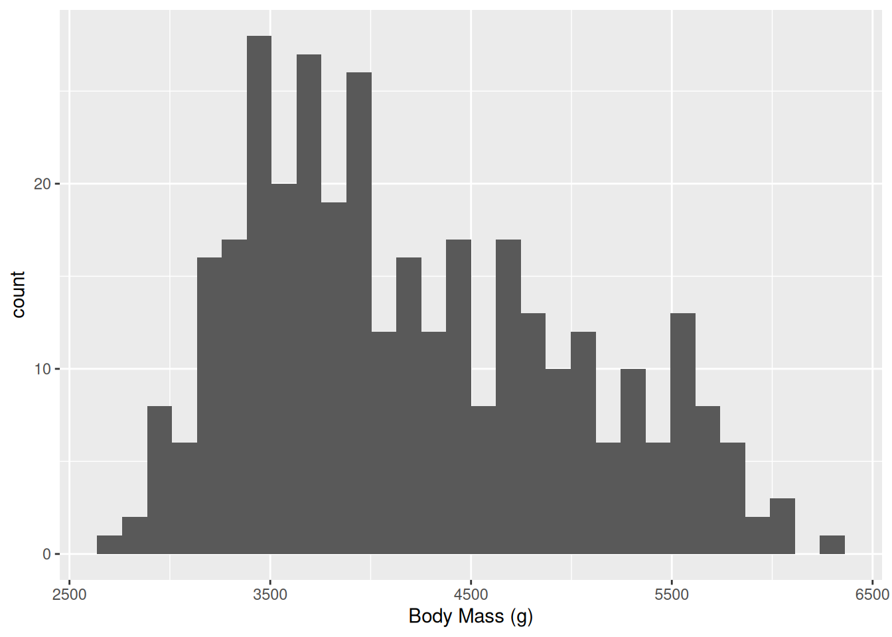
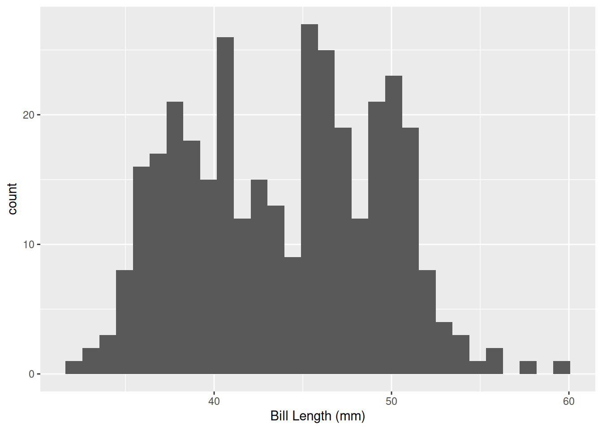

# function_name <- function(inputs) {
# output <- do_something(inputs)
# return(output)
# }Week 11: Writing Functions
Writing Our Own Functions
Functions are the foundation of programming in R. So far, we have been using functions that other people have written for us. We all have the ability to write our own functions to use in R, though!
Understandable and Reusable Code
Writing our own functions can help us to write code in understandable chunks, reduce errors, and also make more reusable code that we can transfer within and between projects, ultimately increasing productivity.
We often run into instances where we want to do something many times but slightly differently.
If you find yourself needing to run the same calculations or make the same plot repeatedly, writing a function to accomplish that task can save you from copying and pasting the same code over and over again…and a lot of time de-bugging repetitive code.
Function Structure
When we create a function, the structure of the function generally looks like this:

A slightly different way to think about this is through inputs and outputs.
The braces indicate that the lines of code are a group that gets run together.
- A function will run all of the lines of code in the braces using the arguments provided.
- We then need to return the output using the
return()function.
Let’s write out our first function. We want to calculate shrub volumes.
calc_shrub_vol <- function(length, width, height) {
volume <- length * width * height
return(volume)
}It is important to note that writing the function does not create the function. We have to remember to run the code to create the function and add it to our environment.
When we run this code chunk above, we can see that the function gets added to our environment in a new section called “functions.”
Let’s use our new function.
calc_shrub_vol(0.8, 1.6, 2.0)[1] 2.56As with other functions, we can store the output as an object to use later.
shrub_vol <- calc_shrub_vol(0.8, 1.6, 2.0)Let’s Practice!
Work on Question 1 in the Assignment.
Black Box
It is important to remember a few things about functions. In many ways, we need to treat functions as a black box.
What we mean by this is that the only thing that the function knows about are the inputs we give it.
Similarly, the only thing our environment know about the function is the output that we ask the function to return to us.
So, in the function above, we can’t “access” variables or arguments that are created within the function. The function exists within it’s own environment, so to speak.
width
volumeLet’s Practice!
Work on Question 2 in the Assignment.
Default arguments
As with many of the functions that we have already used in this class, we can set defaults for the arguments in the functions that we create.
For example, if many of our shrubs are the same height, we could specify that the default height should be 1.
calc_shrub_vol <- function(length, width, height = 1) {
area <- length * width
volume <- area * height
return(volume)
}
calc_shrub_vol(0.8, 1.6)[1] 1.28calc_shrub_vol(0.8, 1.6, 2.0)[1] 2.56calc_shrub_vol(length = 0.8, width = 1.6, height = 2.0)[1] 2.56When do we use argument names?
While you don’t always have to name the arguments you are specifying, there are some general suggestions for best practices.
As we saw above, as long as you specify arguments in the correct order, they do not need to be named. On the other hand, if you specify arguments out of the order in which they are written into the function or you are skipping some arguments (using the default) and then specifying later arguments, it is necessary to name them.
calc_shrub_vol(height = 2.0, length = 0.8, width = 1.6)[1] 2.56With some complicated functions, the order of the arguments is often challenging to remember, so using names by default is a good idea.
Similarly, when there are lots of optional arguments, you will often need to name them if you are using something other than the default. This is standard convention.
calc_shrub_vol(0.8, 1.6, height = 2.0)[1] 2.56Combining Functions
Again, as with other functions, we can combine functions of our own creation together.
est_shrub_mass <- function(volume){
mass <- 2.65 * volume^0.9
}
shrub_volume <- calc_shrub_vol(0.8, 1.6, 2.0)
shrub_mass <- est_shrub_mass(shrub_volume)We can also use pipes with our own functions. The output from the first function becomes the first argument for the second function.
#library(dplyr)
shrub_mass <- calc_shrub_vol(0.8, 1.6, 2.0) |>
est_shrub_mass()Vectors and Data Frames
What if, instead of single values, we have a series of vectors or columns in data frame? Those will work!
# vectors
lengths <- c(1.2, 3, 4.7, 0.3)
widths <- c(0.5, 2.0, 4.2, 1.0)
heights <- c(1.1, 2.2, 3.0, 0.7)
calc_shrub_vol(lengths, widths, heights)[1] 0.66 13.20 59.22 0.21# data frame
shrub_dimensions <- data.frame(length = lengths, width = widths, height = heights)
calc_shrub_vol(shrub_dimensions$length,
shrub_dimensions$width,
shrub_dimensions$height)[1] 0.66 13.20 59.22 0.21We can even use our function inside of a mutate function to create a new column in our dataframe.
shrub_dimensions |>
dplyr::mutate(volume = calc_shrub_vol(length, width, height)) length width height volume
1 1.2 0.5 1.1 0.66
2 3.0 2.0 2.2 13.20
3 4.7 4.2 3.0 59.22
4 0.3 1.0 0.7 0.21Using the tidyverse in Functions
One of the really nice things about the tidyverse is that we usually don’t need to put columns in quotes.
This is because they use “tidy evaluation,” a special type of non-standard evaluation. Basically, they do fancy things under the surface to make them easier to work with.
This is useful for when using functions from the tidyverse, but it means that we need to add an extra step when we use tidyverse functions within our own functions that we are writing.
If we try to use tidyverse functions the way we normally would within our functions, they won’t work.
First, let’s load our packages and get some data from Palmer Penguins.
library(ggplot2)
library(palmerpenguins)
Attaching package: 'palmerpenguins'The following objects are masked from 'package:datasets':
penguins, penguins_rawpenguins <- penguinsNow, let’s write some code for a ggplot within a function as we normally would.
make_plot <- function(df, column, label) {
ggplot(data = df, mapping = aes(x = column)) +
geom_histogram() +
xlab(label)
}
make_plot(penguins, body_mass_g, "Body Mass (g)")To fix this issue, we have to tell our code which inputs/arguments are this special type of data variable.
We can do this by “embracing” them in double braces (e.g., { var }). This tells the function to treat them in the “tidy evaluation” method.
make_plot <- function(df, column, label) {
ggplot(data = df, mapping = aes(x = {{ column }})) +
geom_histogram() +
xlab(label)
}
make_plot(penguins, body_mass_g, "Body Mass (g)")`stat_bin()` using `bins = 30`. Pick better value `binwidth`.Warning: Removed 2 rows containing non-finite outside the scale range
(`stat_bin()`).
make_plot(penguins, bill_length_mm, "Bill Length (mm)")`stat_bin()` using `bins = 30`. Pick better value `binwidth`.Warning: Removed 2 rows containing non-finite outside the scale range
(`stat_bin()`).
Code Design with Functions
Functions let us break code up into logical chunks that can be understood in isolation.
When you write functions, place them at the top of your code then call them below.
The functions hold the details. You can heavily comment the code of your functions, as well. The function calls will show you the outline of the code execution.
Example Structure
Functions (at or near the top of the document)
clean_data <- function(data){
# this function does stuff
do_stuff(data)
}
process_data <- function(cleaned_data){
# this function does dplyr stuff
do_dplyr_stuff(cleaned_data)
}
make_graph <- function(processed_data){
# this function plots stuff
do_ggplot_stuff(processed_data)
}Using the functions in a different code chunk.
raw_data <- read.csv('mydata.csv')
cleaned_data <- clean_data(raw_data)
processed_data <- process_data(cleaned_data)
make_graph(processed_data)Source
Alternatively, if you have a lot of custom functions, you might consider saving them in their own R script.
You can then use the source() function at the beginning of your document to point to that file, read the file, and then the functions will be available for you to use in your current document.
# Example
source("functions.R")